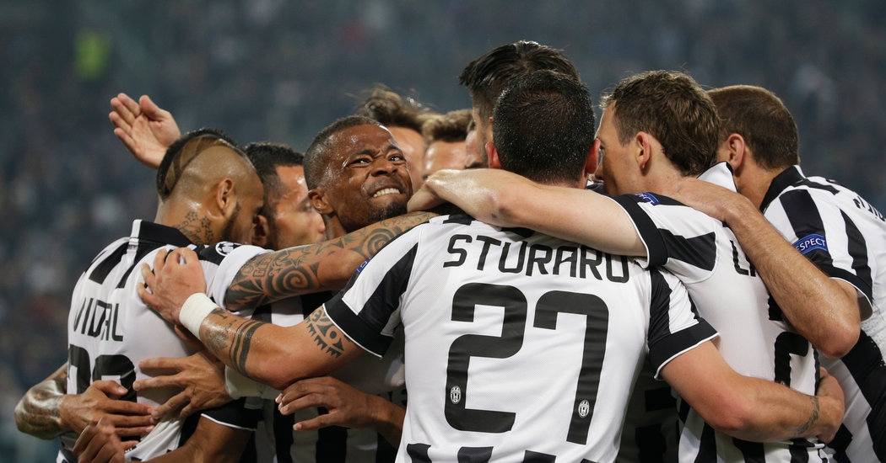

Кaмбэк Ювентуса в Мадриде

Криштиану Роналду просил болельщиков «Ювентуса» верить в победу в матче с «Атлетико» и выход в четвертьфинал. Победитель и главный герой трёх последних розыгрышей Лиги чемпионов не мог мыслить иначе перед ответной игрой с командой Диего Симеоне. У португальца был счастливый опыт решения задачи: в 2016 году его хет-трик в ворота «Вольфсбурга» помог «Реалу» пройти в полуфинал после поражения в Германии – 0:2. «Давайте сохранять оптимизм! ... Фанаты «Ювентуса» создали нужную атмосферу, забыв о своих акциях протеста против повышения цен на билеты. Действительно, это был лучший момент, чтобы доказать, что любишь команду в себе, а не только себя в чёрно-белых цветах.
Читать далее